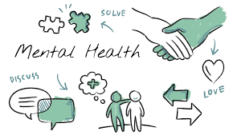

There are a wide variety of mental health conditions. The following are some major categories of mental health disorders:
*mood disorders (like bipolar disorder or sadness)
*anxious conditions
*psychological issues
*psychotic illnesses, including schizophrenia
*eating problems
*disorders associated with trauma (like post-traumatic stress disorder)
*disorders related to substance abuse
The symptoms of each type of mental disease vary. Excessive dieting, for instance, could indicate an eating issue. A symptom of psychosis could include hearing voices. A persistent sense of helplessness following childbirth may indicate postpartum depression. People who are depressed may experience persistent melancholy or low mood. Those who suffer from anxiety frequently worry or fear excessively. Anxiety can occasionally strike for no apparent cause. Significant shifts in a person's feelings, ideas, or behavior may indicate a mental health problem. Alterations may occur abruptly or gradually over an extended duration. Even someone who often handles life well could find it difficult to carry out their daily tasks. They may feel distressed by these changes, or those they cherish may. These symptoms might point to a mental health problem.
Symptoms of mental illness to be aware of:
*strange or nonsensical ideas
*excessive rage or irritation
*inadequate memory and focus, making it difficult to follow a conversation
hearing voices that are inaudible to others
*more or less time spent sleeping
*a change in appetite, obsessive control over calories and food, or excessive physical activity
*Absence of drive
*removing oneself from people
*drug abuse
*suicidal ideas or sentiments that life is not worth living
*acquiring an obsession with a subject, such as religion or death
*neglecting other obligations and personal hygiene
*not performing to standard at work or school